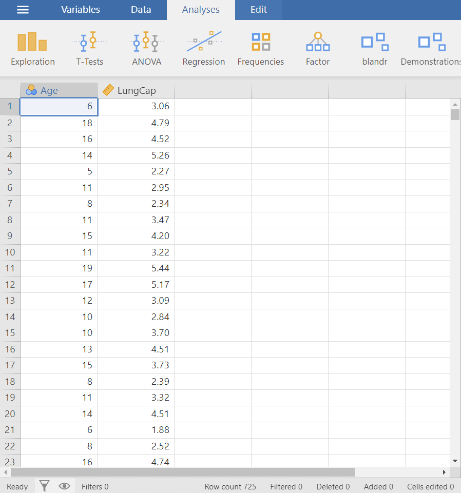
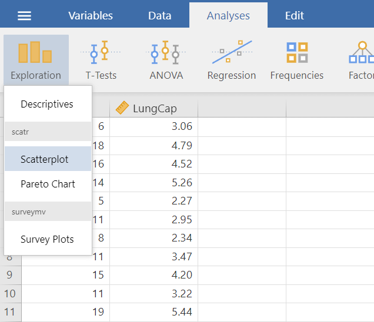
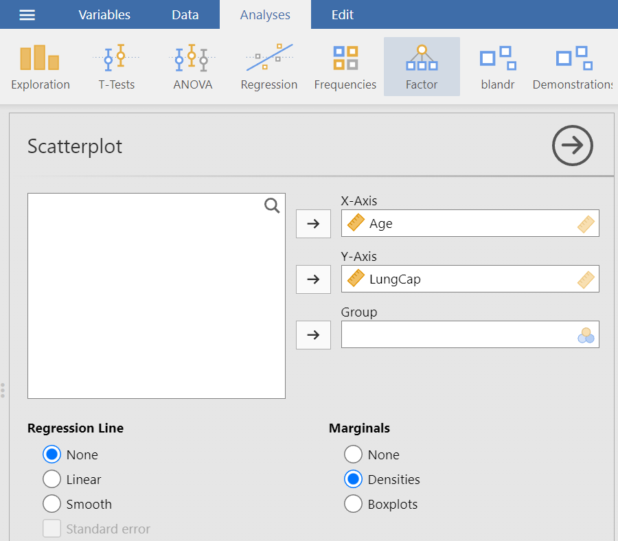
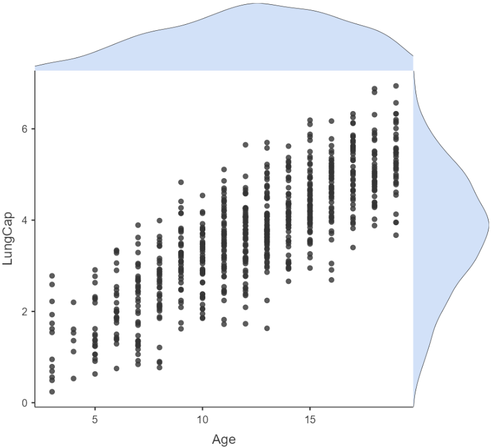
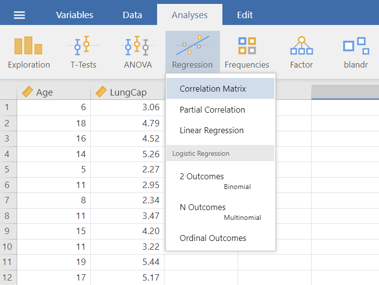
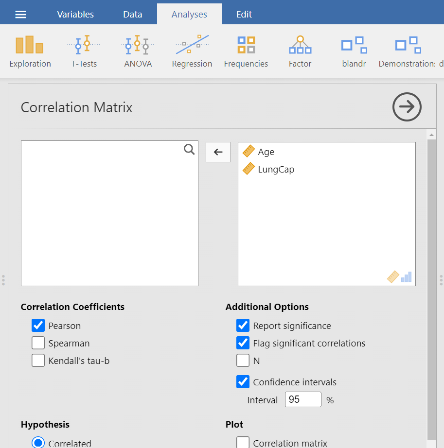

flowchart LR A(Analyses) -.-> B(Exploration) -.-> C(Scatterplot)
7 LAB IX: Correlation
When we have finished this Lab, we should be able to:
In this Lab, we will use the data from “LungCapacity” dataset.(Note: This starts by assuming we know how to get data into Jamovi).
7.0.1 Opening the file
Open the dataset named “LungCapacity” from the file tab in the menu:

The dataset “LungCapacity” has 725 participants and includes two variables. The numeric variables of interest are the Age and the LungCap (Figure 8.1). Double-click on the variable name Age and change the measure type from nominal  to continuous
to continuous  .
.
7.0.2 Research question
Let’s say that we want to explore the association between age (in years) and lung capacity (in liters) for the sample of 725 participants in a survey.
7.0.3 Hypothesis Testsing
7.0.4 Graphical display with a scatter plot
A first step that is usually useful in studying the association between two continuous variables is to prepare a scatterplot of the data. The pattern made by the points plotted on the scatterplot usually suggests the basic nature and strength of the association between two variables.
On the Jamovi top menu navigate to
as shown below in Figure 7.2.

The Scatterplot dialogue box opens (Figure 7.3). Transfer the Age and LungCap variables from the left-hand pane into the X-Axis and Y-Axis fields on the right-hand side, respectively, by highlighting the variables and pressing the Arrow Button ( ). Alternatively, drag and drop the variables. Finally, from Marginals click on the “Densities” radio button. We will end up with the following screen:
). Alternatively, drag and drop the variables. Finally, from Marginals click on the “Densities” radio button. We will end up with the following screen:

The resulting graph looks like this (Figure 7.4):

The above density plots (light blue histograms) show that the data are approximately normally distributed for both Age and LungCap (we have a large sample so the graphs are reliable).
Additionally, the points in the scatter plot seem to be scattered around an invisible line. The scatter plot also shows that, in general, older participants tend to have higher lung capacity (positive association).
The Pearson’s correlation coefficient can quantify the strength of this linear association (alternative is Spearman’s correlation coefficients).
7.0.5 Applying the Pearson’s correlation coefficient, r
Running correlation in Jamovi requires only a few steps once the data is ready to go. In the top menu navigate to:
flowchart LR A(Analyses) -.-> B(Regression) -.-> C(Correlation Matrix)
as shown below in Figure 7.5.

The Correlation Matrix dialogue box opens (Figure 7.6). Transfer both Age and LungCap variables from the left-hand pane into the right-hand pane by highlighting the variables and pressing the Arrow Button ( ). Additionally, from the Correlation Coefficients choices we can select between the following three options: Pearson’s, Spearman, or Kendall’s coefficient. We keep the default choice of “Pearson”. Finally, from Additional Options check “Flag significant correlations” and the “Confidence Intervals” boxes. We will end up with the following screen:
). Additionally, from the Correlation Coefficients choices we can select between the following three options: Pearson’s, Spearman, or Kendall’s coefficient. We keep the default choice of “Pearson”. Finally, from Additional Options check “Flag significant correlations” and the “Confidence Intervals” boxes. We will end up with the following screen:

The output table should look like the following (Figure 7.7):